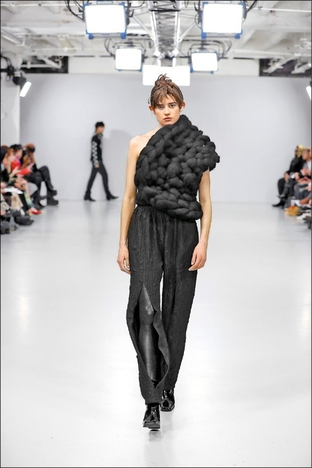

1979 — 2009
起步與獲獎
- 1979出生於台灣
- 2004研究所期間創作《情緒雕塑》系列；台北服裝設計新人獎創意組第三名
- 2004北京師生盃中式服裝單項第一名
- 2005上海東華盃國際服裝大賽金獎；發表《再雕塑》系列
- 2005完成碩士論文《柔軟雕塑概念應用於服裝創作之研究》；浩沙盃泳裝大賽優秀獎
- 2009以《情緒雕塑》獲紐約 Gen Art 前衛時裝設計獎
時裝設計師 ／ 時尚產業分析師 ／ 內容創作者
20 年時裝設計與國際時裝週實務，加上對 LVMH、Kering、Hermès 等精品集團的長期觀察。 時裝週在發生什麼事、一件衣服為什麼難做，我在 YouTube 上一支一支講給你聽。

About
以立體針織雕塑與前衛材質語彙聞名國際的時裝設計師，現在也用設計師的工藝洞察，解析全球時尚產業。
以獨特立體針織雕塑與前衛材質語彙聞名國際的時裝設計師 Johan Ku 古又文，2009 年榮獲紐約 Gen Art 前衛時裝大獎，其創立的品牌 Johan Ku Gold Label 長期活躍於國際舞台，多次登上英國時裝協會（BFC）倫敦時裝週官方日程發表。
在累積超過二十年的服裝設計實務、品牌經營與國際參展經驗後，將專業視角延伸至全球時尚產業評論。透過 YouTube 頻道「Johan Ku 古又文」及深度專欄，結合設計師的工藝洞察、品牌經營實戰以及全球精品集團（如 LVMH、Kering、Hermès 等）的營運策略，為華語受眾帶來兼具美學底蘊與商業邏輯的深度時裝解析。
專業時裝設計、高級訂製與國際品牌營運實務經驗
以「Emotional Sculpture」榮獲紐約 Gen Art 前衛時裝大獎（Avant-Garde Prize）
Johan Ku Gold Label 多次名列 BFC 倫敦時裝週與東京時裝週官方日程
YouTube、Facebook、Instagram、TikTok 全平台訂閱與追蹤總數，內容專注時尚產業宏觀分析
Timeline
從研究所時期的《情緒雕塑》到倫敦時裝週官方日程，四個階段看完二十年。
1979 — 2009
2010 — 2014
2015 — 2022
2024 — 2026
Watch
2024 年開台，2026 年 8 月訂閱數突破 3.9 萬（全平台合計超過 15 萬）。每支影片同時回答兩件事——產業發生了什麼，以及這件衣服到底是怎麼做出來的。
時裝週動態、創意總監更迭、精品集團財報與併購策略。用一般人聽得懂的話，講清楚產業裡每一次變動背後的邏輯。
從靈感發想、設計分析到產業評價的全方位設計解析。同一件衣服，設計師看到的和觀眾看到的往往不一樣——我把那段差距補上。
新影片會先在 YouTube 更新，其他平台的短版內容見頁面最下方。
Selected Work
超過 20 年服裝經驗中，足跡橫跨歐美日，讓我習慣用全球時尚產業內部的視角，思考時尚這門美麗又複雜的產業。

以整條羊毛盤繞成型的粗針織，把服裝推向雕塑的體積。這個系列拿下紐約 Gen Art 前衛時裝大獎（Avant-Garde Prize），也成了往後所有作品的起點。

品牌多次名列 BFC 倫敦時裝週與東京時裝週官方日程。粗針織的體積感從獲獎系列延續到成衣線，材質實驗一季比一季走得更遠。

以米白粗針織披肩包覆三位成員，同一種編織語彙在三個人身上展開成三種輪廓，讓封面在攝影棚白光下留住雕塑般的體積。

四套滿版印花西裝，同一組濃彩圖像在四位團員身上換了四種比例與剪裁，讓樂團的個性直接長在衣服上，而不是靠配件加上去。

桃紅與酒紅的粗針織圍領繞上肩頸，把雕塑針織的量體搬進雜誌封面——一件單品就足以撐起整個版面的視覺重量。

米白粗針織長禮服在獨立展櫃中展出，被放進臺灣時裝史「走向世界」那一段的敘事裡，和旁邊的年表、剪報並排成為展場的一部分。

The Two Faces · 東京時裝週
同一件針織禮服，左邊是展場燈光下的樣子，右邊是燈暗之後。夜光紗線把立體結構重新描了一次，一件衣服因此有了兩張臉。
Services
四個核心領域，從產業分析、設計訂製到演講與品牌顧問。想談合作，直接寄信給我。
Fashion Industry & Strategic Analysis
深度解析全球時裝週動態、創意總監更迭、精品集團財務動態與併購策略。
Fashion & Knitwear Design
高級訂製針織雕塑、藝人演唱會與特殊商業專案專屬服裝設計開發。
Keynote Speaking & Column Writing
時尚產業商業分析演講、設計院校工作坊、媒體深度專欄合作。
Brand Advisory & Styling Curation
品牌產品線策略諮詢、設計企劃與風格品味推薦。
Contact
商業合作、演講邀約、專欄與訂製需求，寄信到下面的信箱。內容更新則在各個平台。